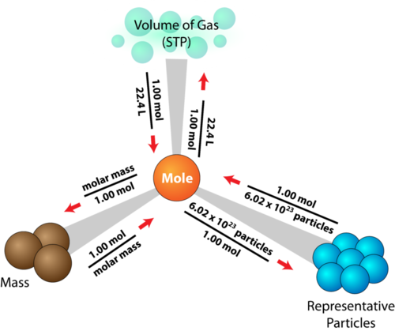

02/11/2019
THE TEST
- Grid (like naming quiz) with formula/ion
- lewis, molecular, polar, etc y/n questions and drawing
- Mini essays dealing with hybridizations and stuff
THE DEMONSTRATION
- ethylene - C2H4
TYPES OF COVALENT BONDS
- sigma bonds - end-to-end bonds, where electrons are concentrated between the two nuclei
- pi bonds - ALWAYS FORM UNHYBRIDIZED - electrons form bonds above and below the plane of the nuclei of the bonding atoms (refer to diagram above)
- single bond always a sigma bond
- double bond is always 1 sigma and 1 pi bond
- triple bond is always 1 sigma and 2 pi bonds
- example: C2H2 (acetylene) H - C =_ C - H


01/05/2019
The mole is a universal unit used to convert between many different elements, compounds, and even gases.
- One mole of an element is 6.022 x 10^23 (Avogadro's number) number of particles
- a dozen eggs is the same amount of items as a dozen elephants, but the weights of those are different. This is how the mole works
EMPERICAL FORMULAS
Emperical formulas tell the relative number of atoms in a compound.
- H2O = 2H to 1O (water)
- CH2O = 1C and O to 2H (glucose)
Combustion analysis is studying when carbon is the limiting reagent and abosrbs an amount of H
QUANTITATIVE INFORMATION

LIMITING REACTANT
A limiting reactant is what is completely used up with no excess in a reaction.
If you have 10 slices of bread and 7 slices of cheese, you can only make 5 sandwiches before all the bread is used up, and you will have an excess of 2 cheese slices. in this cade, bread is the limiting reactant, and cheese is the excess reagent.
Theoretical yield is what would be optimally produced from a perfect reaction. This is used to calculate % error, yield, and determine accuracy.
ESTER LAB
ESTER LAB TYPED
PURPOSE:
We will be preparing esters to gain a deeper understanding of how esters work, and observe a qualitative oder after each made.
PRE-LAB QUESTIONS:
- Sulfuric acid will combine with the water in the aqueous solutions and allow it to not get in the way of the reaction. It acts as a “proton donor”, and increases the rate of reaction between the alcohol and reaction.
 Peppermint oil
Peppermint oil
- Because the boiling point of methyl acetate is 65degrees C. If carried out any hotter, the alcohol will boil and your percent yield will be lower.
To-do list for today:
Take notes on stoicheometryType out ester pre-lab- Complete government assignment
- finish physical math packet